Débutant
« Je découvre le padel et je veux apprendre les bases. »
- Les règles essentielles
- Les coups de base
- Les 20 erreurs du débutant
- Le test de niveau
- Tes premiers exercices
Apprendre · S'entraîner · Jouer en tournoi
Apprends les bons gestes, comprends les placements et développe ton jeu grâce à des exercices et outils interactifs.
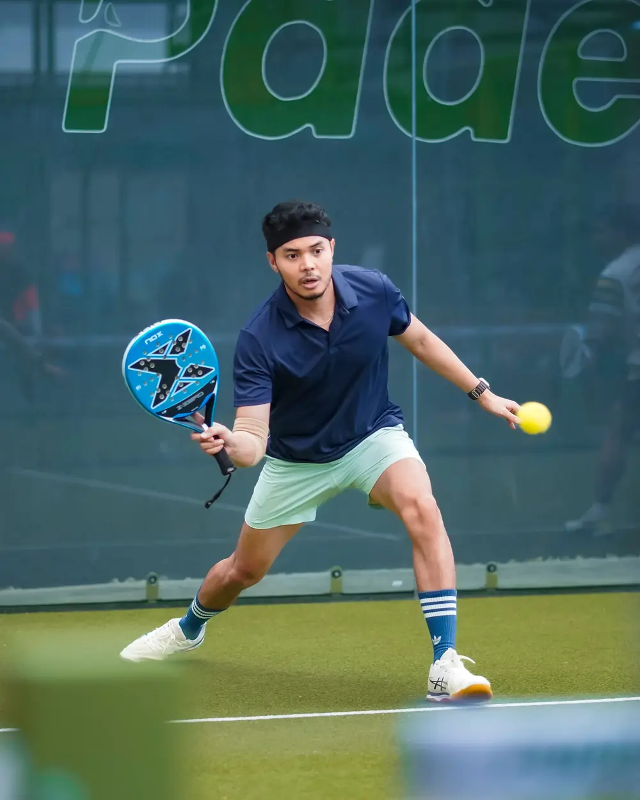
Ton parcours
Choisis ce qui te ressemble : chaque parcours enchaîne les pages et les outils du site dans le bon ordre.
Choisir mon niveau de 1 à 10 D'après la grille des niveaux de padel de la FFT, en quelques secondes et sans compte.
Débutant
Intermédiaire
Compétiteur
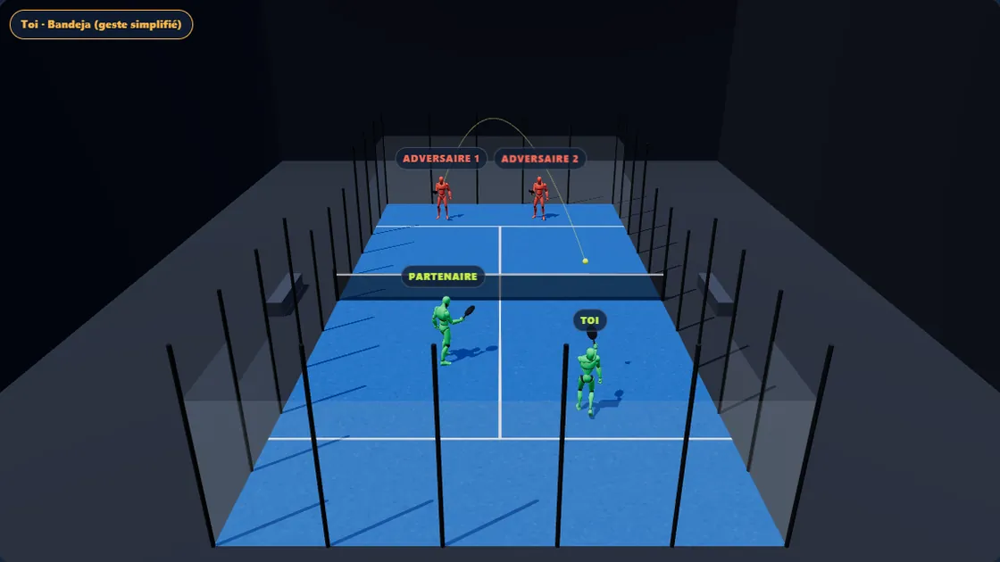
Tactique 3D
Chaque coup de la page Technique a son scénario en 3D : où sont les quatre joueurs, d'où part la balle, où elle va, et ce que tu fais ensuite.
Tournois · Près de chez toi
Les prochains tournois de ton département, mis à jour chaque semaine depuis Ten'Up : catégorie, ville, date et ce que ça rapporte.
Chargement…
Gratuit, sans compte
Tous ces outils marchent sans inscription. Ton espace joueur, lui, demande un compte gratuit : il rassemble ton niveau, tes matchs et ton programme sur tous tes appareils.
Mon espace
Ton espace joueur rassemble ce que tu fais sur le site : tu vois tout de suite quoi travailler, et tu retrouves ton historique.
Apprendre
Débutant : Règles → Technique → Conseils → Matériel. Déjà joueur : Test de niveau → Tutos → Plan 8 semaines.
Nouveau sur le site · octobre 2026
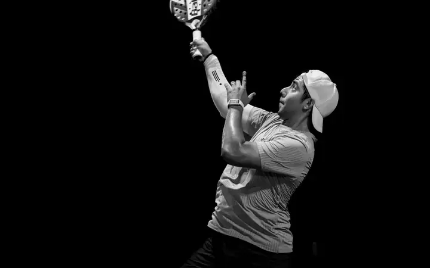
22 fiches : fond de court, transition, filet, service. Situation, cible, erreurs à éviter.
Lire →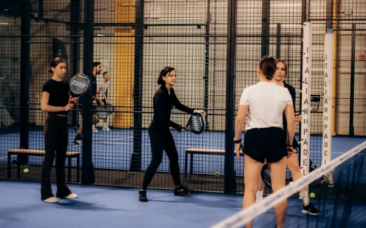
Les 4 phases du point sur un terrain interactif, joueur de droite vs gauche, 6 principes.
Lire →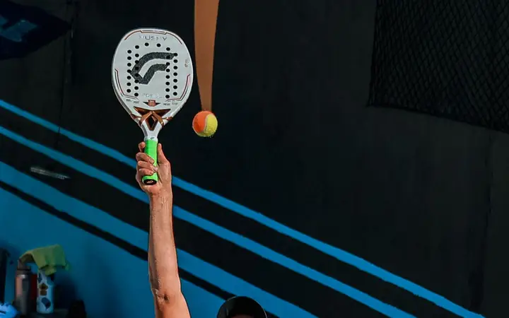
Quand monter, quel coup sur un lob, bouger avec son partenaire. Outils interactifs.
Lire →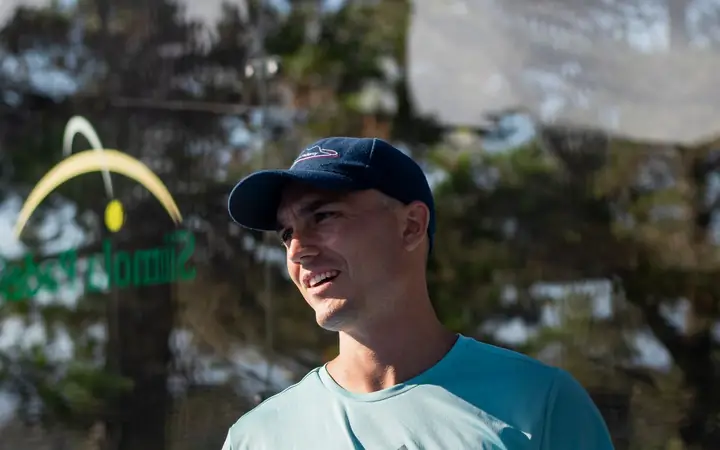
14 questions calées sur le classement FFT : la catégorie de tournoi qui te correspond, de Découverte à P1000, et tes 3 priorités.
Lire →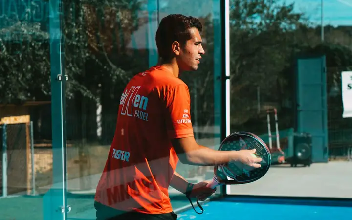
Un thème, un objectif mesurable et un exercice clé par semaine. Échauffement inclus.
Lire →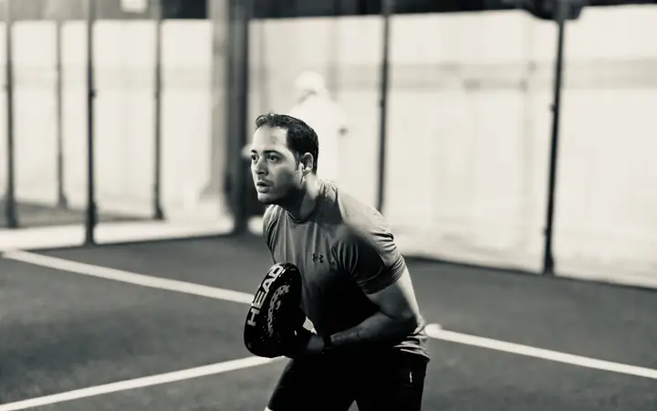
Les chaînes de référence et une recherche filtrée pour chaque coup.
Lire →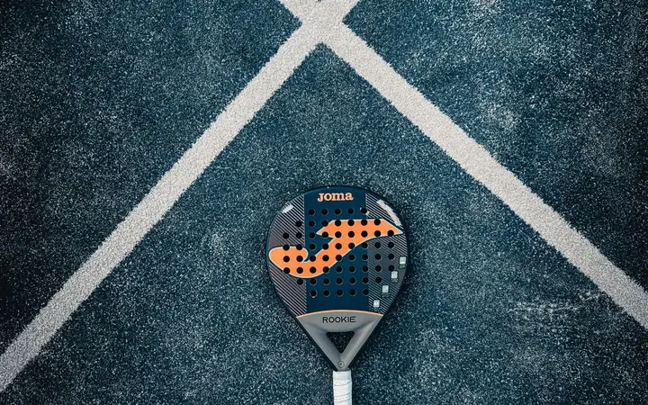
Compter les points, servir, jouer les vitres, trancher les cas litigieux.
Lire →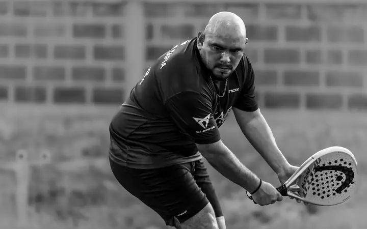
Et la correction pour chacune.
Lire →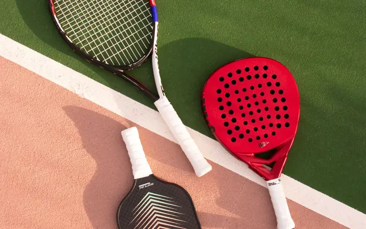
Comprendre forme, mousse, poids, et le sélecteur qui te recommande 3 raquettes.
Lire →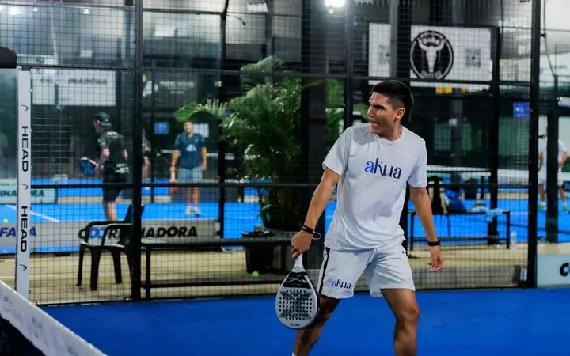
P25 → P2000, Ten'Up, trouver un club, un tournoi, un partenaire.
Lire →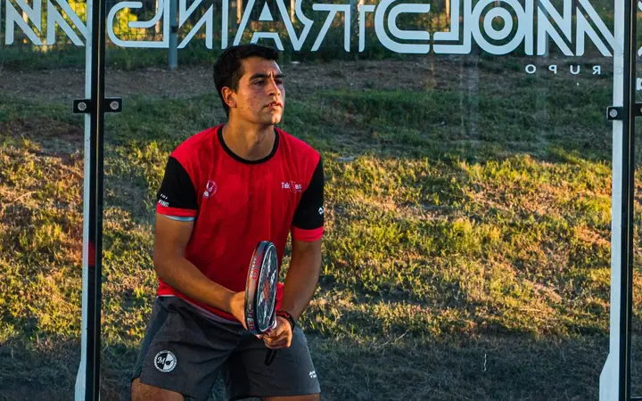
Combien de points rapporte un tournoi, du P25 au P3000, et un simulateur de ton classement FFT.
Lire →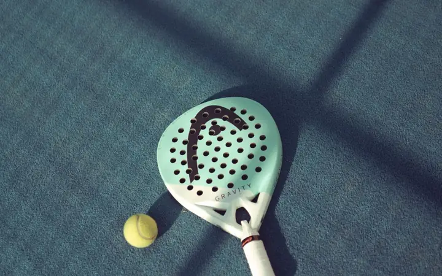
Bandeja, víbora, rincón, chiquita… 29 termes expliqués.
Lire →Qui écrit ce site
Joueur de droite, licencié FFT, compétiteur en P50 et P100 en Normandie. Apprendre Padel est un site indépendant, sans lien avec la FFT ni avec une marque : les règles sont vérifiées contre le règlement FFT et FIP, les prix des raquettes sont datés, et les tournois viennent de Ten'Up chaque semaine.